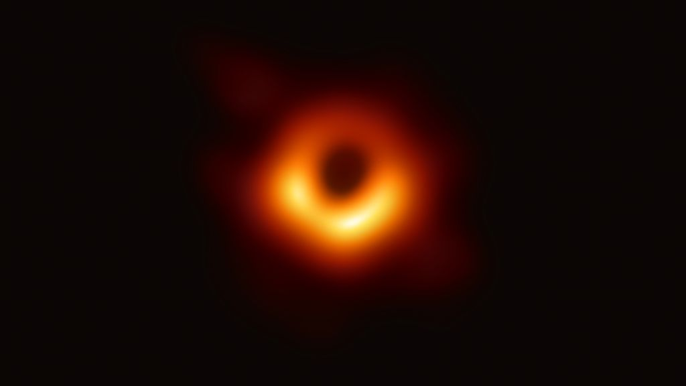
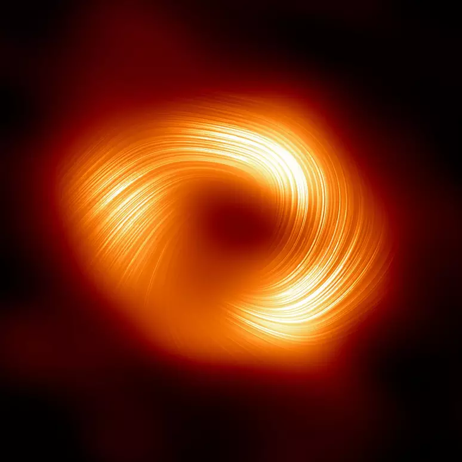

Biblioteca De Buraco Negros
Em 14 de setembro de 2015, o observatório de ondas gravitacionais LIGO fez a primeira observação direta bem-sucedida de ondas gravitacionais.O sinal foi consistente com as previsões teóricas para as ondas gravitacionais produzidas pela fusão de dois buracos negros: um com cerca de 36 massas solares e o outro com 29 massas solares.

Desde 1995, os astrônomos acompanham os movimentos de 90 estrelas que orbitam um objeto invisível coincidente com a fonte de rádio Sagitário A.
Ao ajustar suas trajetórias a órbitas keplerianas, os astrônomos foram capazes de inferir, em 1998, que um objeto de 2,6 milhões de massas solares deve ser contido num volume com um raio de 0,02 anos-luz.

Galáxia Messier 87 - lar do primeiro buraco negro

Em 2019, foi lançada uma das primeiras fotos "próximas" de um buraco negro. Que estava completamente borrada. Isso é causado tanto pela distância, tanto pelo modo que a foto foi capturada, ou seja, é feita por diversos radioscópios. Esse é o buraco negro no centro da galáxia M87.

Em 2024, foi lançada uma nova foto do buraco negro no centro de nossa galáxia, a Via Láctea. Essa foto foi feita para a análise dos campos magnéticos do buraco negro Sagitário A*.

Aqui, está uma das imagens reais porém com as propriedades caracteristicas de um buraco negro.

Para ver a próxima página falando sobre as perguntas em aberto e teorias,
Clique aqui

Luanne Gabrielle

Isis Diaz

Gabrielle Gaby